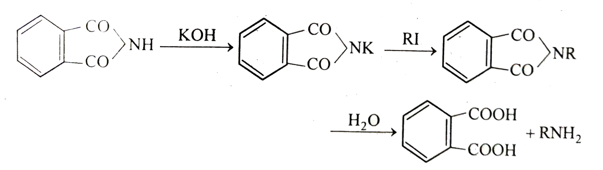
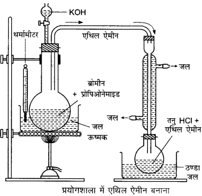
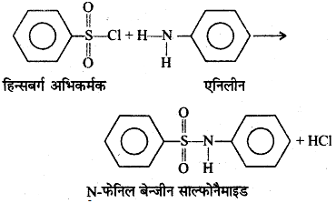
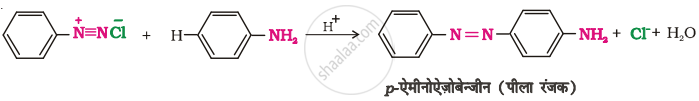
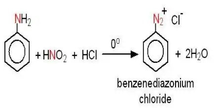
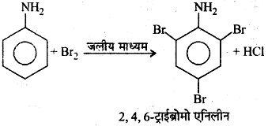
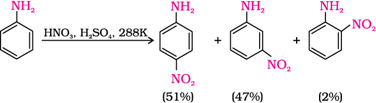
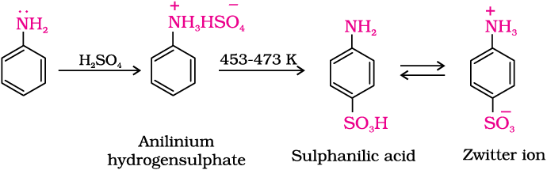
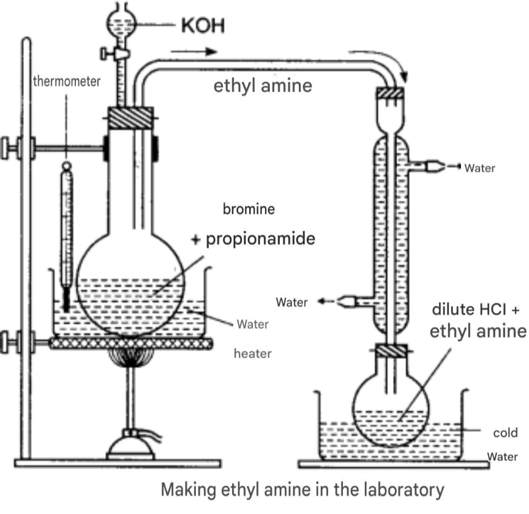

Alkyl derivatives of ammonia (NH3) are called amines.
Based on the number of hydrogen atoms of ammonia that have been replaced, amines are of the following types.
1. Primary amine
When one hydrogen atom of ammonia is replaced by one alkyl group, it is called a primary amine.
2. Secondary amine
When two hydrogen atoms of ammonia are replaced by two alkyl groups, it is called a secondary amine.
3. Tertiary amine
When all three hydrogen atoms of ammonia are replaced by three alkyl groups, it is called a tertiary amine.
4. Quaternary ammonium salts
Besides these three types of amines, quaternary ammonium salts are also known, which may be regarded as tetra-alkyl derivatives of ammonium salts.
1. Common/trivial system
In this system, the suffix 'amine' is added at the end of the name of the alkyl group. In mixed amines, the name of the smaller alkyl group is written first, followed by the name of the larger group.
2. IUPAC system
Aliphatic amines are called alkanamines. In this system, the final 'e' of the corresponding alkane is replaced by the suffix 'amine'.
The following types of isomerism are found in amines.
1. Chain isomerism
When amines having the same molecular formula exist with different types of carbon chains (straight or branched), it is called chain isomerism.
Example:
2. Position isomerism
When the –NH2 group is attached at different positions of the carbon chain, it is called position isomerism.
Example:
3. Metamerism
In this type of isomerism, the functional group is the same, but two identical or different alkyl groups are attached to the nitrogen atom. For example — the two metamers of secondary amine:
The general methods of preparing amines are as follows.
1. Ammonolysis (2024)
This is the process of replacing the halogen atom in alkyl halides, or the hydroxyl group in alcohols (or phenols), by an amino group. The reagent used for ammonolysis is ammoniacal alcohol. Generally a mixture of primary, secondary and tertiary amines is formed.
(a) Hofmann's method: When an alkyl halide is heated with an aqueous or alcoholic solution of ammonia in a sealed tube at 100°C, a mixture of primary, secondary and tertiary amines is obtained.
(b) Sabatier's method: When a mixture of alcohol vapour and ammonia gas is passed over alumina or thoria heated to 350°C, a mixture of primary, secondary and tertiary amines is obtained.
2. Reduction of nitro compounds
When nitro compounds are reduced by tin and hydrochloric acid, or by lithium aluminium hydride, primary amines are obtained.
3. Mendius reaction
When an alkyl cyanide is reduced by sodium and ethanol, or by lithium aluminium hydride, a primary amine is obtained.
When an alkyl isocyanide is reduced by sodium and ethanol, or by lithium aluminium hydride, a secondary amine is obtained.
4. Hofmann bromamide reaction (2019)
When an amide is reacted with Br2 and KOH, a primary amine is formed. This is called the Hofmann bromamide reaction.
5. Schmidt reaction
When hydrazoic acid dissolved in an inert solvent such as CHCl3 reacts with fatty acids in the presence of sulfuric acid at 50–55°C, primary amines are formed.
6. Gabriel phthalimide synthesis
Phthalimide reacts with KOH in an alkaline medium to form potassium phthalimide. This potassium phthalimide further reacts with an alkyl halide (R–X) to give N-alkyl phthalimide. Acidic hydrolysis of N-alkyl phthalimide with 20% HCl gives a primary amine (R–NH2).

In Gabriel phthalimide synthesis, nucleophilic substitution of the phthalimide ion with the alkyl halide occurs via an SN2 reaction.
In aromatic halides (aryl halides), the C–X bond acquires partial double-bond character due to resonance, and therefore the SN2 reaction does not occur.
Hence, aromatic primary amines cannot be prepared by Gabriel phthalimide synthesis.
Ammonolysis of alkyl halides is a nucleophilic substitution reaction in which the halogen atom is replaced by an amino (–NH2) group. This reaction is called ammonolysis.
Ammonolysis of an alkyl halide does not give the corresponding pure amine, because the primary amine formed in the first step further reacts with the alkyl halide to form secondary and tertiary amines. Subsequently it also forms a quaternary ammonium salt.
Hence, this reaction gives us a mixture of amines, not a pure amine.
The physical properties of amines are as follows.
In amines, the nitrogen atom has high electronegativity. Hence it forms hydrogen bonds with water molecules. Due to the association of water and amine, the amine becomes soluble in water.
The electronegativity of nitrogen is lower than that of oxygen, due to which amines have weaker hydrogen bonds compared to alcohols and carboxylic acids. Hence the boiling points of amines are lower than those of alcohols and carboxylic acids.
Amines are basic due to the presence of a lone pair of electrons. Due to the positive inductive effect (+I) of the methyl group, the electron density on the nitrogen atom of methylamine increases. It can now accept a proton more easily, hence it is more basic than ammonia.
Amines are basic due to the presence of a lone pair of electrons. Due to the positive inductive effect of the ethyl group, the electron density on the nitrogen atom of ethylamine increases. It can now accept a proton more easily. Hence it is more basic than ammonia.
The basicity of amines depends on the availability of the lone pair of electrons present on the nitrogen atom, by which they accept a proton (H+). The +I effect (electron-donating effect) of alkyl groups increases the electron density on nitrogen, which increases basicity.
A primary amine (R–NH2) has one alkyl group, a secondary amine (R2NH) has two alkyl groups, and a tertiary amine (R3N) has three alkyl groups.
However, in a tertiary amine, hydrogen bonds cannot form with water, so its conjugate acid (R3NH+) is not stable. For this reason, in aqueous solution the secondary amine is the most basic.
Decreasing order of basicity: Secondary amine > Primary amine > Tertiary amine > Ammonia (NH3)
The chemical properties of amines are as follows.
1. Basic nature
An aqueous solution of an amine ionizes to give OH− ions. The basic properties of amines are revealed by the following reactions.
Reaction with water: Soluble amines dissolve in water to form alkyl ammonium hydroxide, which dissociates to give OH− ions.
Reaction with acids: forms salts.
2. Alkylation
All amines react with alkyl halides, and a quaternary ammonium salt is formed as the final product.
3. Acylation
Primary amines react with acid chlorides to form substituted amides.
5. Liebermann's nitrosoamine test (reaction with nitrous acid)
Nitrous acid reacts differently with different types of amines.
When a primary amine is treated with nitrous acid, alcohol and nitrogen gas are formed.
When a secondary amine is treated with nitrous acid, an oily liquid nitrosoamine is formed.
When the nitrosoamine is heated with a small amount of phenol and a few drops of concentrated H2SO4, a green-coloured solution is formed, which turns blue on adding NaOH. This reaction is called the Liebermann nitrosoamine reaction and is used for testing secondary amines.
Tertiary amine does not react with cold nitrous acid.
6. Carbylamine reaction
When a primary aliphatic amine or aniline is heated with chloroform in the presence of alcoholic KOH, an extremely unpleasant-smelling compound, isocyanide (carbylamine), is formed.
This reaction is given only by primary amines. Secondary and tertiary amines do not give this reaction.
7. Mustard oil reaction
When a primary amine is treated with carbon disulphide and then heated with mercuric chloride, an alkyl isothiocyanate is formed, which has a mustard-oil-like odour.
Secondary amines react with carbon disulphide to form a salt of dialkyl dithiocarbamic acid; this salt is not decomposed by mercuric chloride.
Tertiary amines do not react with carbon disulphide at all.
8. Reaction with Hinsberg's reagent
Benzenesulfonyl chloride (C6H5SO2Cl) is called Hinsberg's reagent.
Primary amines react with Hinsberg's reagent to form monoalkyl sulfonamide, which is soluble in KOH. Secondary amines also react with Hinsberg's reagent to form dialkyl sulfonamide, which is insoluble in KOH. Tertiary amines do not react with Hinsberg's reagent at all. Based on this difference, the Hinsberg test is used to distinguish between 1°, 2° and 3° amines.
| Reaction | Primary (1°) amine | Secondary (2°) amine | Tertiary (3°) amine |
|---|---|---|---|
| Reaction with nitrous acid (HNO₂) | Alcohol is formed and N₂ gas is evolved. | Nitrosoamine is formed (Liebermann-nitroso reaction). | Only a salt is formed; Liebermann-nitroso reaction does not occur. |
| Carbylamine reaction | An unpleasant-smelling isocyanide is formed. | No reaction. | No reaction. |
| Reaction with halides | Combines with three molecules of alkyl halide to form a quaternary salt. | Combines with two molecules of alkyl halide to form a quaternary salt. | Combines with one molecule of alkyl halide to form a quaternary salt. |
| Mustard oil reaction (with CS₂ and HgCl₂) | Alkyl isothiocyanate is formed, which has a foul odour. | No reaction. | No reaction. |
| Reaction with Hinsberg's reagent (C₆H₅SO₂Cl) | Forms monoalkyl sulfonamide, which is soluble in KOH. | Forms dialkyl sulfonamide, which is insoluble in KOH. | No reaction. |
Principle: In the laboratory, ethylamine is obtained by reacting propanamide with a solution of bromine and caustic potash.
Equation:

Procedure: Equivalent amounts of bromine and propanamide are taken in a round-bottomed distillation flask. A 10% KOH solution is added to it. After this, an excess of 50% KOH solution is added and the mixture is heated on a water bath to 57–67°C.
On heating, when the colour of the solution is completely removed (colourless), ethylamine starts distilling out. The ethylamine produced is absorbed in dilute HCl.
Physical properties:
Aniline is an aromatic amine. Its formula is C6H5NH2.
The general methods of preparing aniline are as follows.
1. Reduction of nitro compounds
When nitrobenzene is reduced by tin and hydrochloric acid, or by lithium aluminium hydride, aniline is obtained.
2. Hofmann bromamide reaction (2019)
When benzamide is reacted with Br2 and KOH, aniline is formed.
3. Schmidt reaction
When hydrazoic acid dissolved in an inert solvent such as CHCl3 reacts with benzoic acid in the presence of sulfuric acid at 50–55°C, aniline is formed.
4. From phenol
Aniline is obtained by heating phenol with ammonia at 300°C in the presence of Al2O3.
Aniline has a water-repelling phenyl group. This group reduces its ability to form hydrogen bonds with water molecules, due to which it does not dissolve in water.
Aniline is basic in nature. When it is mixed with HCl, it reacts with the acid to form a salt called anilinium chloride.
Hence aniline is insoluble in water, but soluble in HCl.
In aniline, the lone pair of electrons on nitrogen participates in resonance with the benzene ring, due to which this electron pair is not easily able to accept a proton (H+).
Whereas in ammonia there is no such resonance, so the lone pair of electrons on nitrogen remains fully available.
Hence aniline is a weaker base than ammonia.
The chemical properties of aniline are as follows.
1. Basic nature
Aniline reacts with acids to form a salt called anilinium chloride.
2. Alkylation
Aniline reacts with alkyl halides, and a quaternary ammonium salt is formed as the final product.
3. Acylation
Aniline reacts with acid chloride to form acetanilide.
4. Schotten-Baumann reaction
When aniline is heated with benzoyl chloride, benzanilide is formed. This reaction is called the Schotten-Baumann reaction.
5. Carbylamine reaction
When aniline is heated with chloroform in the presence of alcoholic KOH, an extremely unpleasant-smelling phenyl isocyanide is formed.
6. Reaction with Hinsberg's reagent
Benzenesulfonyl chloride (C6H5SO2Cl) is called Hinsberg's reagent. With aniline, this reagent forms phenyl benzenesulfonamide.

7. Coupling reaction (2023/24)
Aniline reacts with diazonium chloride at ice-cold temperature to give a bright yellow colour of p-aminoazobenzene. This is called the coupling reaction.

8. Diazotisation (2025)
When aniline reacts with nitrous acid at a cold temperature (0–5°C), a diazonium salt is formed. This reaction is called diazotisation.

Diazonium salts are generally not stored, because they are highly unstable. At ordinary temperature they easily decompose to form nitrogen gas (N2) and other stable substances. There is also a risk of explosion during this decomposition.
1. Halogenation
(Question: Write the reaction of aniline with bromine water in an aqueous medium.)
Aniline reacts with bromine water in an aqueous medium to form a white precipitate of 2,4,6-tribromoaniline.

2. Nitration
Due to the formation of the anilinium ion in a strongly acidic medium, aniline forms meta-nitroaniline along with ortho and para.

3. Sulfonation
On heating with concentrated H2SO4, aniline forms sulfanilic acid. This molecule exists as a zwitterion.

4. Friedel-Crafts reaction
Aniline does not show the Friedel-Crafts reaction, because the catalyst AlCl3 (a Lewis acid) forms a salt with aniline, which deactivates the benzene ring.
Principle: In the laboratory, aniline is obtained by heating nitrobenzene with tin and hydrochloric acid.
Equation:

Procedure: 20 grams of nitrobenzene and 40 grams of granulated tin are taken in a round-bottomed flask. A reflux condenser is fitted to the flask and 100 ml of hydrochloric acid is added slowly (about 10 ml at a time). After each addition of acid, the flask is shaken and the temperature is not allowed to exceed 90°C.
After this, the flask is heated on a water bath until the characteristic odour of nitrobenzene disappears. On cooling, a solid mass with the formula (C6H5NH2·HCl)2·SnCl4 separates out.
On treating this solid mass with concentrated NaOH solution, a clear alkaline solution is obtained. From this solution, aniline is liberated and floats on top as a dark brown oily layer.
The uses of aniline are as follows.
| Property | Ethylamine | Aniline |
|---|---|---|
| 1. Boiling point | 19°C | 184°C |
| 2. Odour | Sharp, ammonia-like odour | Mild, characteristic type of odour |
| 3. Reaction with nitrous acid | With cold dilute nitrous acid, alcohol is formed and nitrogen gas is evolved. | Forms benzenediazonium chloride. |